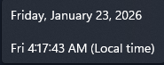
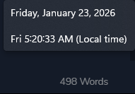

I've been stuck here a while
Too much of a perfectionist to get anything done!
Table of content
What have I been up to
I've just realized blogging isn't so easy as people like mrusme makes it seem, Them words don't magically appear on the webpages.
side note: We pretend like its 2016 and gen AI doesn't exist...

And while we're at it can we also pretend it 11pm and I've got ample time to have a good night rest :-).
Anyways I digress, And I think this section should more aptly be named what will I be up to, Because all I've really done so far is beat Hades on an Exagryph run.. the The aspect of Eris is quite broken.
That and I've made ample headway in Clair Obscur, I see where all the GOTY hype was coming from.
Ah right the actual "important stuff",
I've tried and failed multiple time to pick up the C# programming language. My todo list would probably read like a broken record with all the "Learn C#" entries it contains.
And it's not even because its that hard to learn but because its just an uber boring language, probably by design. I could be viewing it from a wrong perspective though.
Fun and Art are two sides of the same coin, they're both acts that are solely carried out to please the actor, and the moment a subjective reason to do either is introduced, they both cease to be. - They become work.
What I'm getting at is that the underlying reason I've decided to learn C# might have skewed the vanilla experience for me, thus making it seem like a chore as opposed to whatever said base experience is supposed to feel like.
But whatever the case, and as far as my personal experience goes, I'd say the most boring programming community award easily goes to C# or more specifically .Net . Death by a thousand jargons!
I didn't plan for this entry to end up mostly being a C# rant but it is what it is.
Some other things I plan on achieving in the coming weeks \ months
Contributing to the Zen browser
Over at Zen.
I've always wanted to do some proper open source.
Adding some proper article categories to the blog
Nobody likes a flat file-system.
Setup a decent Tilde homepage
I'm still not completely sure what I'd be needing it for but we move regardless.
Weekly blog entry ?
We'll see how that one goes.

Look at that we're 500 words in already.. maybe the words actually do magically appear on the webpages afterall.
Anyways this seems like a good place to end this. Sayonara and Good Night.. (Morning?).
Mandatory edgy quote
To invent is inevitably to destroy.